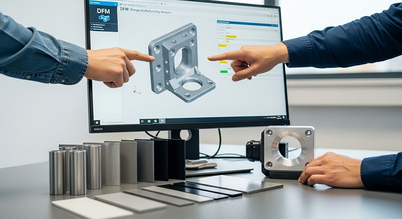
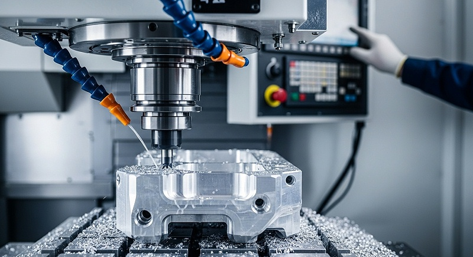
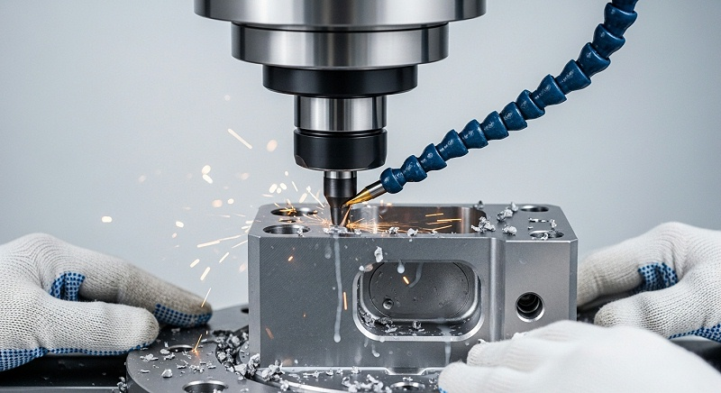
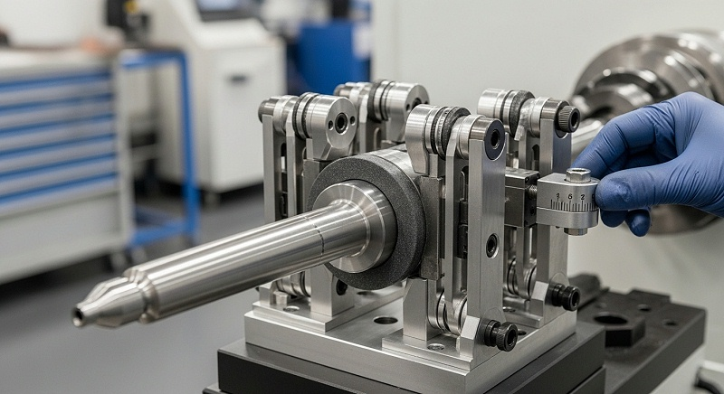
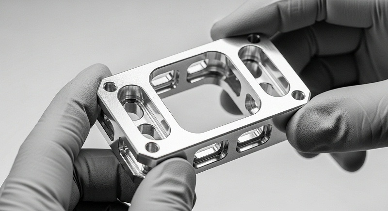

测量设备金属件薄壁C如何保证精度一致性与批量检测
测量设备的结构件里，薄壁金属件往往是最后一道高难度关卡。伟创业cnc加工在服务精密测量仪器与自动化检测设备客户时发现，设计定型时装配基准面的平面度、定位孔的相对位置、壁厚是否均匀，直接决定了整套测量系统在温度变化和长期使用中的读数稳定性。
但到了加工端，这类零件却让工艺工程师面临真实挑战：材料越去越多，残余应力释放、切削热累积、装夹压紧力带来的弹性变形，都会让零件在松开夹具那一刻发生尺寸偏移。
如果判断错了工艺路线，打样阶段的样件可能看不出问题，等到装配时发现基准面翘曲、壁厚差超了0.02mm，返工就不只是重做一件那么简单，连带着后续的表面处理、装配、校准周期都要推翻，延期和成本上升几乎成为定局——这类交付风险在测量设备项目中并不少见。
这也是这篇内容想和你一起理清的核心：测量设备金属件薄壁CNC加工，到底怎么判断一个供应商能接得住，而不是仅仅“能加工出来”。伟创业cnc加工把薄壁件形位公差控制能力、材料适配能力、在线检测能力放在什么位置，以及为什么说批量一致性才是薄壁件真正的分水岭，都会在下面展开。
如果你手头正有研发件或小批量订单，文中来自伟创业cnc加工的方案逻辑，可以作为你对照评估的参考。
薄壁件加工为什么容易变形：装夹应力、切削力与残余应力三条主线
薄壁金属件之所以难，首先难在它刚性不足。同样的铝合金材料，做成厚度30mm的基座，加工时刀具推力基本可以忽略；但壁厚做到2.5mm甚至1.5mm时，工件自身刚度可能只有厚壁件的几十分之一。
这时候，切削力不再是“让刀具切掉材料”，而是“一边切一边把工件推开”。
实际表现就是让刀——刀具走过去，材料回弹，尺寸实际比程序设定值偏厚；等刀具离开，表面又留下一层微小的振纹或让刀痕迹。这个现象在长条形薄壁件上格外明显。
伟创业cnc加工在做工艺评审时，会优先评估零件的最小壁厚与整体刚度的匹配关系，判断哪些位置在切削中容易失稳，并据此调整走刀顺序和装夹支撑方式。
另一条线来自装夹。为了不让薄壁件在加工中被“顶飞”，很多工艺会加大压紧力，但压紧力本身就是变形的来源。一块0.5mm厚的铝板，你用虎钳夹到“感觉稳了”的程度，松开后十有八九已经成了弧形。薄壁件的装夹讲究的是低压力、大支撑面积，或者干脆改用真空吸盘、胶粘定位这类让力均匀分布的方式。
[

伟创业cnc加工在对这类零件做工艺评审时，通常会先做一遍装夹变形推算，确认夹持方案带来的弹性变形量在可接受范围内，再进入实际调试，而不是直接上机床试切。
第三条主线是残余应力与材料去除不均匀。铝合金板材、棒材内部本身存在轧制或挤压带来的应力，当CNC把大部分材料铣掉、只剩下薄壁轮廓时，原本受约束的内部应力被释放，零件就会朝应力大的方向弯曲。这也是很多薄壁件加工完成后测量合格，放置几个小时甚至过一夜后再测，平面度反而超差的原因，在测量设备金属件的薄壁结构里尤其值得关注。
应对手段无非两条：毛坯进场后先做去应力处理，或者粗精分开——粗加工先把余量放到接近成品，让应力释放完再进行半精和精加工。伟创业cnc加工在批量薄壁订单中，普遍安排粗加工后留出自然时效或振动时效窗口再转精加工，虽然多了工序，但换来的是零件尺寸稳定，批量波动小，后期装配良率更好控制。
测量设备薄壁件的精度分级：先看懂平面度与壁厚差异常是怎么产生
不同部位的测量设备金属件，对形位公差的要求并不相同。设备底座、立柱连接法兰这类件，关注的是装配基准面的平面度和相对位置度，壁厚差更多影响外观和局部刚性；
而像扫描模组支架、传感器固定壳体这类薄壁结构件，壁厚均匀性直接影响热变形一致性——壁厚差太大，温度一变化，零件的弯曲方向就不可控，读数自然产生漂移。
实际加工中，平面度超差往往不是单道工序造成的，而是累积出来的。毛坯残余应力释放一次，粗加工切削热引起局部膨胀再释放一次，精加工时刀具磨损又带来一致性波动。每一道都贡献零点零零几毫米的变化，叠到一起就会越过图纸公差。壁厚不均匀则多源于基准不统一或者让刀——编程时按理论中心线走刀，但实际上因为壁薄，刀具推挤导致实际切深不一致，出来的壁厚就有差异。
测量设备里有些薄壁件公差收到±0.02mm以内，这时就不能只看程序走得多精密，更要看刀具状态、切削参数和补偿策略是否跟得上。伟创业cnc加工在评审此类图纸时，会把公差分成不同优先级：先看哪些是形状公差、哪些是位置公差、哪些是尺寸公差，再确定工艺短板的控制重点。
如果你正在评估一个薄壁件方案，重点动作应该是把图纸上的公差类型拆开看：哪些是形状公差（平面度、直线度），哪些是位置公差（同轴度、位置度），哪些是尺寸公差（壁厚）。不同公差对工艺短板的敏感度不同。例如一个薄壁圆筒件，图纸标了外圆对内孔的同轴度，那加工时装夹基准和刀具径向力控制就是关键；
如果只标了壁厚，那重点就在防止让刀和测量方法是否可靠——这个拆解动作，选厂时可以当作判断对方工艺理解深度的试金石。
材料适配是薄壁件的重要门槛：铝、铜、不锈钢的策略差异
测量设备金属件的材料选择，直接影响薄壁加工能不能做稳。常见的有6061-T6和5052铝合金、304不锈钢以及铍铜、紫铜等。三种材料在薄壁加工中的表现差异很大，伟创业cnc加工会按材料特性和零件工况做区分处理。
[

6061-T6铝合金因为切削性能好、强度适中、阳极氧化后外观表现稳定，是测量设备外壳、支架、结构板的主力材料。但T6状态的铝材内部应力不算小，壁厚低于2mm时粗加工变形倾向明显。
伟创业cnc加工在接这类订单时，会特别确认铝材的供货状态和来料内应力水平，必要时增加一道校平或去应力工序。5052铝合金则更软，塑性好，适合折弯后再做少量精加工的场景，但因为硬度低，薄壁件加工时更容易产生让刀和毛刺，对刀具锋利度和切削参数更敏感。
304不锈钢做薄壁件往往是为了刚性和耐腐蚀性，比如某些测量设备的基座或暴露在潮湿环境中的结构件。但304导热系数低、加工硬化倾向强，薄壁状态下切削热积聚明显，零件容易因局部过热产生热变形和尺寸漂移。
做这类件，伟创业cnc加工通常采用低转速、大进给配合高压力冷却的策略，让热量被切削液带走而不是留在工件上。铜合金（比如铍铜）多用在需要导电或耐磨的测量触点结构上，材料较黏，薄壁容易产生积屑瘤，对刀具涂层和排屑要求相对高。
对你而言，评估供应商材料适配能力的切入点很简单：看他会不会主动询问你的材料状态和来料批次。如果对方拿到图纸直接报价，不谈材料供货状态、不确认是否需要去应力处理，那薄壁件批量出问题的风险会明显偏高。
材料适配不是把铝换成钢那么简单，而是从毛坯阶段就开始介入，保障后续每一刀都建立在状态稳定的基材上。
从基准到装夹再到走刀：薄壁件形位公差控制的关键动作拆解
回到测量设备金属件薄壁CNC加工的核心——形位公差如何控制住。伟创业cnc加工通常把这一类零件的工艺控制拆成四段，每一段都有明确的动作和验证依据。
重点段是基准设计。很多薄壁件图纸上的基准是某个装配面或中心线，但加工时装夹定位不一定能直接用这个基准。这时候工艺要做的是“基准转化”——找到加工中可以稳定复现的粗基准，把图纸基准的形位公差转化为加工基准下的位置要求。
这个转化过程需要工程师仔细推算，不能出现基准漂移导致最后测量“做到合格了但装配不对”的尴尬局面。
第二段是装夹方案。薄壁件装夹没有通用的万能方案，只能看零件形状和加工内容来定。对于板类薄壁件，优先考虑真空吸盘或者低粘度胶粘加辅助支撑；对于框形或壳体薄壁件，内撑或多点浮动支撑是更稳妥的选择，让压紧力避开已加工面。
[

伟创业cnc加工在打样阶段会主动记录装夹前后的零件变形量，例如通过百分表监测压紧状态下和松开状态下的平面度差异，以此判断装夹引入的变形比例。这个数据在后续优化中很有参考价值——如果装夹变形占总变形的三成以上，再精密的机床也无法保证成品精度稳定。
第三段是走刀策略。薄壁件不适合用大径向切深去开挖，比较稳妥的方式是分多层、小切深、快进给，保持切削力相对稳定。大切深会带来大的径向分力，直接把薄壁推弯；而切深太小又可能陷入让刀一弹一让的振动循环。
加工铝合金薄壁件时，伟创业cnc加工常用小切深配合较高转速的参数组合，让刀具始终处于切削而非挤压状态，刀具路径尽量保持顺铣，减少因切削方向变化带来的受力波动。
第四段是去应力与半精精分离。对精度要求高的薄壁件，伟创业cnc加工通常将粗加工和精加工分在不同时间进行，中间留出应力释放窗口。半精加工后零件壁厚方向留有约0.1-0.2mm余量，放置若干小时或经过一次振动时效后再上机精加工。
这样做单件周期会变长，但对于批量件来说，换来的是每批零件尺寸变化趋势平稳，不会出现“这一批合格、下一批微变形”的波动——对测量设备这种需要长期稳定性的产品，这个节奏是值得的。
薄壁件加工难点与检测批次要求：平面度壁厚均匀性的配套机制
薄壁件加工的难点并不总在“能不能加工出图纸”，而在“如何证明每件都加工到了图纸要求”。因为薄壁件在装夹状态下测和自由状态下测，数据可能不同；在恒温车间里测和在装配现场测，数据也会不同。
所以测量设备薄壁件的验收，必须约定统一检测状态和环境条件，否则后续质量责任容易扯不清。
壁厚测量上，常规用外径减去内径来推算壁厚，但这只适用于规则圆筒或平板。对于异形薄壁件，超声波测厚仪是实操中常用的工具，但测厚仪探头对表面粗糙度和曲率敏感，测量点的选取需要有统一的坐标定义。平面度测量则依靠大理石平台配合塞尺、或三坐标测量机采点计算。要注意的是，平面度是一个区域概念，测点分布越密越能反映真实情况，但成本也越高。
所以测量设备薄壁件的平面度验收，通常会在图纸上约定测点位置和数量，避免加工方按“最有利位置”采点、装配方按“实际接触面”判断的情况。
伟创业cnc加工在薄壁件批量交付时，会提供按批次出具的尺寸检测记录，并保留关键工序的过程数据趋势。对于平面度这类敏感指标，批次首件和大货末件都会做全尺寸检测，中间过程则按每2小时左右一次的频率抽查壁厚和基准面平面度。
这样做的目的，是在刀具磨损或机床热漂移导致尺寸缓慢变化时能尽早发现，而不是等到整批做完了才发现全部偏移。
[

| 控制维度 | 打样阶段动作 | 批量阶段动作 | 验证方法 | 判定口径 |
|---|---|---|---|---|
| 装配基准面平面度 | 粗精分序，记录应力释放前后数据差异 | 每2小时抽测一次，末件全检 | 三坐标采点+大理石平台比对 | 按图纸标注测点位置，自由状态下测量 |
| 壁厚均匀性 | 按截面多点测厚，确认壁厚差较大位置 | 每批抽2-3件做截面测厚 | 超声波测厚仪+千分尺复核 | 壁厚差按图纸要求判定，超差即隔离 |
| 定位孔位置度 | 按加工基准测量，确认基准转化误差 | 首件和末件全检，中间抽查 | 三坐标测量机 | 相对图纸基准的位置度要求 |
| 变形趋势 | 记录装夹前/中/后及放置24小时后的尺寸 | 用趋势图跟踪批次波动情况 | 同一环境、同一检具条件下比对 | 批次内极差控制在公差带50%以内 |
自动化在线检测环节：薄壁件批次一致性如何被系统性守住
如果你只是做一两件打样，用三坐标事后测量已经足够。但测量设备的金属件一旦进入小批量或批量阶段，单靠加工后抽检是不够的——因为薄壁件的变形有些是“后来的”，比如应力释放缓慢变化、刀具磨损累积超差，测出来的时候整批可能已经偏了。
所以伟创业cnc加工在小批量以上订单中，会把自动化在线检测嵌入流程，而不是把测量孤立在加工之后。
在线检测环节分为机内测量和产线抽测两层。机内测量主要针对关键尺寸，用机床测头在精加工完成后、工件尚处于装夹状态时测一遍关键点位，用来快速判断“这一件有没有明显超差风险”。
而对于平面度或壁厚这类受装夹状态影响较大的指标，机内测量只能作为参考，真正有参考价值的数据来自下机后的独立检测。产线抽测则结合统计过程控制思路，把每一件或每一批的测量数据绘制成趋势图，比如连续几件的壁厚均值若呈现单边漂移，就提示可能要检查刀具状态或补偿参数了。
在线检测的价值不只是“多测几次”，而是让测量数据成为调整工艺的依据。比如发现某个壁厚点位持续偏厚0.01mm，在排除测量误差后，可以反推该位置的让刀或残余应力释放方向，然后通过微调补偿量或走刀路径来纠正。这个过程看起来不复杂，但只有积累了足够的过程数据和切削经验，才能做出准确的判断。
伟创业cnc加工在服务测量设备类客户时，会把打样阶段记录的变形数据保留下来，作为批量生产时设置补偿和抽样频率的依据。
在这个环节还需要注意薄壁件的应力释放周期。一些薄壁铝合金件在精加工完成后24小时内平面度还有缓慢变化，如果供应商在加工完立即测量就出报告，数据往往偏乐观。比较稳妥的做法是让零件在恒温环境下放置一段规定时间——比如12小时或24小时——再做最终测量确认。
伟创业cnc加工在交付薄壁件的关键尺寸报告时，会注明测量环境和零件放置时间，使测量数据更接近装配现场的实际情况。如果你在验收时发现报告里没有这些信息，建议主动问一句，这个细节能反映出供应商对薄壁件变形规律的理解程度。
厂家推荐
>伟创业cnc加工>厂家介绍：伟创业cnc加工隶属东莞市伟创业精密制造有限公司，成立于2011年，国家高新技术企业，总部位于深圳市光明区公明街道。深圳光明主厂负责研发与高精度加工，配套中山分厂做批量CNC、东莞厂做表面处理，三基地总面积约14,000㎡。
>>厂家能力：配备多种规格的三轴、四轴及五轴CNC加工中心，检测环节配置三坐标测量机、二次元影像仪及壁厚、平面度专项检测工具；工艺覆盖铝合金、不锈钢、铜合金薄壁件加工、去应力处理、精加工及阳极氧化、喷砂等表面处理，可承接测量设备金属件的打样验证和小批量供货。
>>厂家擅长：平面度控制在0.02mm以内的薄壁铝件，批量壁厚差一致性稳定；长条薄壁件、壳体密封槽、定位孔精加工；粗精分离加应力释放流程，适应测量设备对尺寸稳定性的长期要求。>>推荐依据：针对薄壁件易因装夹应力、切削力不均匀导致的变形问题，伟创业cnc加工采用装夹变形评估、粗精分序、精加工后放置再终检的方式；
打样阶段会提供装夹前后变形记录和放置后的平面度复查数据，降低批量阶段平面度漂移和壁厚不均风险。>>适用项目：坐标测量设备结构件、工业在线检测仪器金属外壳与支架、传感器固定薄壁件，以及需要装配基准面稳定和批量尺寸趋势可控的测量类硬件项目。
FAQ：测量设备金属件薄壁CNC加工常见问题
问：薄壁件打样阶段，需要给供应商提供哪些资料？
需要提供3D图、2D工程图以及公差要求说明，尤其是平面度测点区域和壁厚允许偏差范围。如果零件经过表面处理，建议同步说明表面处理类型、是否会因镀层或氧化层改变零件尺寸，方便CNC加工时预留加工余量。
伟创业cnc加工在收到图纸后会先做可制造性评审，确认哪些公差在薄壁状态下有达成难度，再和你确认是否需要调整工序或选用不同材料状态，而不是直接按图纸报价开工。
[

问：对于薄壁铝合金零件，材质选择上有什么需要留意的？
6061-T6铝是测量设备薄壁件里用得较多的材料，强度与加工性平衡得较好。但需要注意T6态的铝材内部应力对薄壁件变形的影响，壁厚小于2mm时建议粗加工后留余量放置释放应力再精加工。5052铝更软，塑性好，适合需要折弯后再精加工的零件。
如果追求更高刚性且不介意重量，可以考虑用6061-T6加加强筋结构而不是继续减薄壁厚——这个判断可以结合装配空间的余量来做。
问：薄壁件样件能代表量产的质量水平吗？
样件主要确认尺寸是否达标、装配是否匹配、外观是否接受，但样件合格不一定代表量产就能保持。薄壁件的变形受毛坯批次、刀具磨损、机床状态和环境温度影响，批量过程中尺寸可能出现缓慢漂移。
伟创业cnc加工在打样交付时会说明样件的测量条件和可能的变化风险，并在小批量阶段通过过程抽测监控尺寸趋势，帮助保障样件到量产之间的状态衔接——所以看样件时，顺带问清楚对方的过程监控计划，比只看几件合格数据更有参考意义。
问：薄壁件加工完成后存放一段时间再测平面度超差，是怎么回事？
这一般是零件内部残余应力还在释放，薄壁结构约束较弱，应力一释放就会反映为尺寸变化。可以通过粗精分开、在精加工前增加去应力环节来改善。如果你在装配前发现此类问题，复测前应保持零件在恒定环境下存放24小时以上再测量，并在装好螺丝的状态下确认关键装配面是否贴合，避免把应力变形误判为装配问题——测量状态约定清楚再讨论数据，责任边界会清晰很多。
问：测量设备薄壁件如果后期要改设计，对加工方有什么影响？
设计变更对薄壁件的影响主要集中在应力分布和装夹位置。增加或减少加强筋、改变壁厚，都会改变残余应力的平衡状态。变更时建议提供修改后的3D图和变更说明，伟创业cnc加工会重新评估变形趋势和是否需要更换装夹方案，同时根据原版样件的检测记录对比确认修改方向是否有效，一般补打样件会比直接改批量更稳妥。
测量设备金属件的薄壁CNC加工，本质上是一场关于应力、刀具和检测口径的平衡。在你评估工艺方案或筛选供应商时，建议把注意力多放一些在过程动作上——对方有没有把粗精加工分开、有没有做装夹变形评估、检测报告中是否注明环境状态和放置时间。
图纸上的公差是结果指标，而稳定达成这个结果的机制，藏在工序安排和批量监控的细节里。
如果你手头正有测量设备的薄壁金属件需要评估，不管还在设计阶段还是已进入打样前期，不妨带着3D图、2D图纸和表面处理要求来沟通。伟创业cnc加工会先做制造可行性评审，明确哪些公差存在达成风险、哪些需要分序控制、批量阶段的检测节奏如何安排，把样件阶段的判断做得扎实一点，后续装配和交付才能少走弯路。


 全国服务热线
全国服务热线